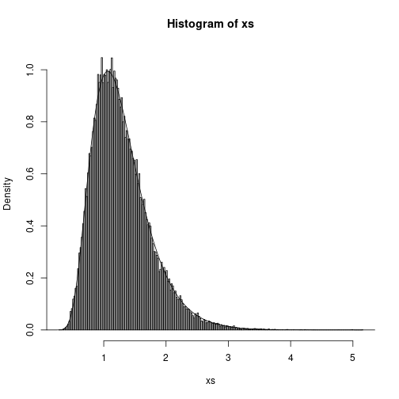
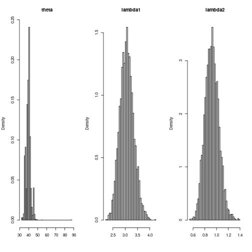
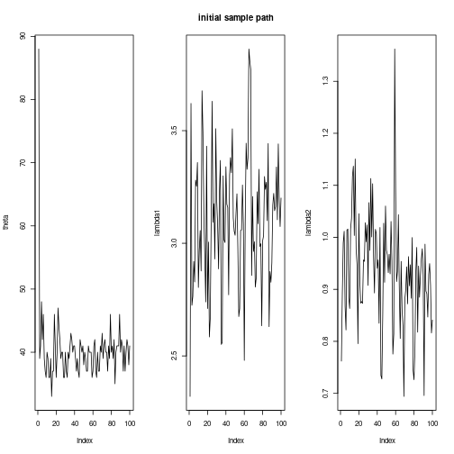
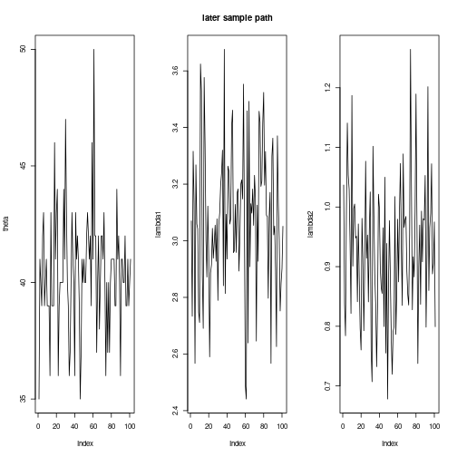
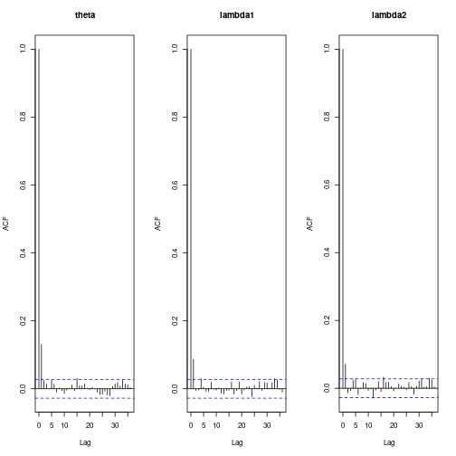

Computational Statistics - SIUe - STAT 575 - Exam 1
Alex Towell (lex@metafunctor.com)
Problem 1
$$ q(x) = \frac{e^x}{e^{2x}+1}, x \in (-\infty,\infty). $$Part (a)
Find the Monte Carlo estimate of $\sigma^2$ using acceptance-rejection sampling. Take the candidate distribution as the double exponential, i.e., $g(x) = \exp(-|x|)$.
Solution
We are interested in sampling $X$ from a kernel $q$.
q <- function(x) { exp(x)/(exp(2*x)+1) }
Suppose $Y$ is the double exponential random variable with the kernel $g$.
g <- function(x) { exp(-abs(x)) }
Since the double exponential is symmetric about its mean $0$, we can simply sample $W \sim \mathrm{EXP}(\lambda=1)$ and let $Y = -W$ with probability $0.5$ and $Y = W$ with probability $0.5$.
ry <- function(n)
{
ys <- numeric(n)
ws <- rexp(n=n,rate=1)
us <- runif(n)
for (i in 1:n) { ys[i] <- ifelse(us[i] < 0.5,-ws[i],ws[i]) }
ys
}
We forgo a formal proof and point out that the denominator is always larger than the numerator, i.e., $q(x)/g(x) < 1$. However, as $x$ goes to $\pm \infty$, $q(x)/g(x)$ goes to $1$ and thus $c = 1$. We implement the acceptance-rejection sampler for $X$ with kernel $q$ with:
rx <- function(n)
{
xs <- numeric(n)
for (i in 1:n)
{
repeat
{
y <- ry(1)
if (runif(1) < q(y)/g(y))
{
xs[i] <- y
break
}
}
}
xs
}
We estimate $E(X^2)$ by taking the square of a sample:
x <- rx(10000)
print(mean(x^2))
## [1] 2.43841
Part (b)
Find the normalizing constant of the pdf by integrating $q(x)$ over the support. Then derive the CDF of $X$.
Solution
$$ \frac{1}{Z} \int_{-\infty}^{\infty} q(x) dx = 1. $$$$ Z = 2 \int_{1}^{\infty} \frac{1}{1+u^2} du. $$$$ Z = 2 (\mathrm{arctan}(\infty) - \mathrm{arctan}(1)) $$$$ Z = 2 (2\pi/4 - \pi/4) = 2(\pi/4) = \pi/2. $$We verify with a numerical integrator:
right_riemann_sum <- function(f, a, b, n)
{
h <- (b-a)/n
h*sum(f(a + (1:n)*h))
}
When we apply the numerical integrator to the kernel $q$ and subtract $\pi/2$ we obtain a result that is approximately $0$, confirming our earlier calculation:
right_riemann_sum(q,-10,10,1000) - pi/2
## [1] -9.080289e-05
pdf <- function(x) { 2/pi * q(x) }
cdf <- function(x) { 2/pi * arctan(exp(x)) }
Part (c)
Generate a sample of $X$ using inverse transform method and find the Monte Carlo estimate of $\sigma^2$.
Solution
$$ \begin{align*} p &= \frac{2}{\pi} \mathrm{arctan}(e^x)\\ \frac{\pi}{2} p &= \mathrm{arctan}(e^x)\\ \tan\left(\frac{\pi}{2} p\right) &= e^x\\ x &= \log\left(\tan\left(\frac{\pi}{2} p\right)\right). \end{align*} $$$$ X = \log\left(\tan\left(\frac{\pi}{2} U\right)\right) $$where $U \sim \mathrm{UNIF}(0,1)$.
rx.transform <- function(n)
{
us <- runif(n)
log(tan(pi/2*us))
}
We estimate $\sigma^2$ with:
x <- rx.transform(10000)
print(mean(x^2))
## [1] 2.508885
Part (d)
Repeat the estimation using importance sampling with standardized weights.
Solution
#' importance sampling
#'
#' estimates E{h(X)} by taking n sample points from g and then taking a
#' weighted mean using the standardized weights.
rx.importance <- function(n,h)
{
w = function(x) {
out <- q(x)/g(x)
out/sum(out)
}
ys <- ry(n)
sum(w(ys)*h(ys))
}
We apply the procedure to $h(x) = x^2$ to estimate $E(h(X))$:
print(rx.importance(10000,function(x) { x^2} ))
## [1] 2.437009
Problem 2
$$ f(x|\theta_1,\theta_2) \propto x^{-1.5} \exp\left\{-\theta_1 x - \frac{\theta_2}{x} + \psi(\theta_1,\theta_2)\right\} $$where $\psi(\theta_1,\theta_2) = 2\sqrt{\theta_1\theta_2} + \log(2\theta_2)$. Estimate $E(X)$ using MCMC. You may take the proposal distribution as a $\mathrm{Gamma}(\sqrt{\theta_2/\theta_1},1)$.
Solution
Here is our implementation of the Metropolis-Hastings algorithm:
# A sampling procedure from the pdf f using Metropolis-Hastings algorithm
rf <- function(n, theta1, theta2, burn=0)
{
g <- function(x) { dgamma(x,shape=sqrt(theta2/theta1),rate=1) }
rg <- function(n) { rgamma(n,shape=sqrt(theta2/theta1),rate=1) }
ker <- function(x) { x^(-1.5)*exp(-theta1*x-theta2/x) }
m <- n + burn
xs <- vector(length = m)
xs[1] <- rg(1)
for (i in 2:m) {
v <- rg(1)
u <- xs[i-1]
R <- ker(v) * g(u) / (ker(u) * g(v))
if (runif(1) <= R) { xs[i] <- v }
else { xs[i] <- u }
}
xs[(burn+1):m]
}
We apply the algorithm to $\theta_1 = 5$ and $\theta_2 = 3$:
n <- 100000
theta1 <- 3
theta2 <- 5
xs <- rf(n,theta1,theta2,burn=20000)
Now, we estimate $E(X)$ with:
print(mean(xs))
## [1] 1.28597
We have deduced that the true mean is given by $\mu = \sqrt{\theta_2/\theta_1}$, and so we see the algorithm provides a reasonable estimation.
We would like to plot the histogram with the density superimposed on top of it. So, we implement the density function with:
f.make <- function(theta1,theta2)
{
k <- function(x) { x^(-1.5) * exp(-theta1*x - theta2/x) }
Z <- right_riemann_sum(k,0,20,10000)
function(x) { k(x) / Z }
}
f <- f.make(theta1,theta2)
hist(xs,breaks=200,freq=F)
ps <- seq(0,10,by=.01)
lines(x=ps,y=f(ps))

Problem 3
Consider the data on coal-mining disasters from 1851 to 1962 (coal.txt data on blackboard). The rate of accidents per year appears to decrease around 1900, so we consider a change-point model for these data. Let $X_j$ be the number of accidents in year $j$. $X_j \sim \mathrm{Poisson}(λ_1)$, $j = 1, \ldots, θ$, and $X_j \sim \mathrm{Poisson}(λ_2)$, $j = θ + 1, \ldots, 112$. The change-point occurs after the $θ$-th year in the series. This model has parameters are $θ, λ_1, λ_2$. Below are three sets of priors for a Bayesian analysis of this model. Assume prior $λ_i \sim \mathrm{Gamma}(3, 1)$ for $i = 1, 2$, and assume $θ$ follows a discrete uniform distribution over ${1, \ldots, 111}$.
Part (a)
Derive the posterior distribution of $(θ, λ_1, λ_2)$.
Solution
$$ X_i \sim f(x_i | \lambda_1,\lambda_2,\theta) $$$$ f(x_i | \lambda_1,\lambda_2,\theta) = \frac{\lambda_1^{x_i} e^{-\lambda_1}}{x_i!} I(i \leq \theta) + \frac{\lambda_2^{x_i} e^{-\lambda_2}}{x_i!} I(i > \theta). $$$$ L(\lambda_1,\lambda_2,\theta|\vec{x}) = \prod_{i=1}^{\theta} \frac{\lambda_1^{x_i} e^{-\lambda_1}}{x_i!} \prod_{\theta+1}^{n} \frac{\lambda_2^{x_i} e^{-\lambda_2}}{x_i!} $$$$ L(\lambda_1,\lambda_2,\theta|\vec{x}) \propto \lambda_1^{t(\theta)} e^{-\theta \lambda_1} \lambda_2^{t(n)-t(\theta)} e^{-(n-\theta) \lambda_2}. $$where $t(\theta) = \sum_{i=1}^{\theta} x_i$.
$$ f(\theta,\lambda_1,\lambda_2|\vec{x}) = f(\vec{x}|\theta,\lambda_1,\lambda_2)f(\theta,\lambda_1,\lambda_2)/f(\vec{x}) $$$$ f(\theta,\lambda_1,\lambda_2|\vec{x}) \propto L(\theta,\lambda_1,\lambda_2|\vec{x})f(\theta)f(\lambda_1)f(\lambda_2). $$where $f(\theta) \propto I(0 \leq \theta < n)$ and $f(\lambda_j) \propto \lambda_j^2 \exp(-\lambda_j)$.
$$ f(\lambda_j) \propto \lambda_j^2 e^{-\lambda_j}. $$$$ f(\theta,\lambda_1,\lambda_2|\vec{x}) \propto \lambda_1^{t(\theta)} e^{-\theta \lambda_1} \lambda_2^{t(n)-t(\theta)} e^{-(n-\theta) \lambda_2} \lambda_1^2 e^{-\lambda_1} \lambda_2^2 e^{-\lambda_2} $$where $t(\theta) = \sum_{i=1}^{\theta} x_i$, $1 \leq \theta < n$, and $\lambda_1,\lambda_2 > 0$.
Part (b)
Derive the conditional posterior distributions necessary to carry out Gibbs sampling for this change-point model.
Solution
$$ f(\lambda_1|\theta,\lambda_2,\vec{x}) \propto \lambda_1^{t(\theta) + 2} e^{-(\theta+1) \lambda_1}, $$$$ \lambda_1 \sim \mathrm{GAM}(t(\theta)+1,\theta+1). $$$$ f(\lambda_2|\theta,\lambda_1,\vec{x}) \propto \lambda_2^{t(n)-t(\theta)+2} e^{-(n-\theta+1) \lambda_2}, $$$$ \lambda_2 \sim \mathrm{GAM}(t(n) - t(\theta) + 1,n-\theta+1). $$$$ f(\theta|\lambda_1,\lambda_2,\vec{x}) \propto \lambda_1^{t(\theta)} e^{-\theta \lambda_1} \lambda_2^{-t(\theta)} e^{\theta \lambda_2}. $$$$ f(\theta|\lambda_1,\lambda_2,\vec{x}) \propto \left(\frac{\lambda_1}{\lambda_2}\right)^{t(\theta)} e^{(\lambda_2 - \lambda_1) \theta} I(\theta \in \{1,\ldots,n-1\}), $$which is the kernel of a probability mass function parameterized by $\lambda_1$ and $\lambda_2$.
$$ \sum_{\theta=1}^{k-1} f(\theta|\cdot) < U \leq \sum_{\theta=1}^{k} f(\theta|\cdot). $$Additional analysis
Note that $\theta$ has a prior that only assigns non-zero values to $\theta \in {1,\ldots,n-1}$ where $n=112$ (there are $112$ data rows in the ``coal.txt’’ data file). Thus, given a prior that assigns $0$ probability to the outcome $\theta=n$, the conditional posterior distribution for $\theta$ also assigns zero probability to $\theta=n$. Intuitively, it makes sense that no amount of evidence is sufficient to overcome a prior of zero probability.
Furthermore, recall that $\theta$ is the change-point. If the change-point occurs at $\theta=n$, then in fact there was no change-point and $X_i \sim \mathrm{POI}(\lambda_1)$ for $i=1,\ldots,n$. In other words, assigning $\theta=n$ a prior probability of $0$ is equivalent to claiming there is a change point.
We may generalize this so that if we are given prior information that $\theta \notin \mathbb{K}$, we may assign zero probability to that event in the prior, i.e., $\sum_{k \in \mathbb{K}} f_{\theta}(k) = 0$. Of course, we may assign a non-uniform prior over the support, as well. The posterior distribution $f_{\theta|\cdot}$ from a previous experiment is a likely candidate for such a prior.
Part (c)
Implement the Gibbs sampler. Use a suite of convergence diagnostics to evaluate the convergence and mixing of your sampler.
Solution
We load the data with:
x <- read.table("coal.txt",header=T)[,2]
N <- length(x)
We implement the conditional samplers with:
t <- function(theta) { sum(x[1:theta]) }
rlambda1 <- function(n,theta) { rgamma(n,t(theta)+1,theta+1) }
rlambda2 <- function(n,theta) { rgamma(n,t(N)-t(theta)+1,N-theta+1) }
ktheta <- Vectorize(function(theta,lambda1,lambda2)
{
if (theta < 1 || theta >= N) { return(0) }
(lambda1/lambda2)^t(theta)*exp(theta*(lambda2-lambda1))
},"theta")
ptheta <- function(theta,lambda1,lambda2)
{
Z <- sum(ktheta(1:(N-1),lambda1,lambda2))
ktheta(theta,lambda1,lambda2)/Z
}
rtheta = function(n,lambda1,lambda2)
{
sample(x=1:(N-1),n,replace=T,prob=ptheta(1:(N-1),lambda1,lambda2))
}
rlambda1.prior <- function() { rgamma(1,shape=3,rate=1) }
rlambda2.prior <- function() { rgamma(1,shape=3,rate=1) }
rtheta.prior <- function() { sample(1:(N-1),1,replace=T) }
We implement the Gibbs sampling with:
gibbs <- function(n,burn=1000)
{
nn <- n+burn
thetas <- matrix(nrow=nn,ncol=3)
thetas[1,] <- c(rtheta.prior(),rlambda1.prior(),rlambda2.prior())
for (i in 1:(nn-1))
{
theta.new <- rtheta(1,thetas[i,2],thetas[i,3])
lambda1.new <- rlambda1(1,theta.new)
lambda2.new <- rlambda2(1,theta.new)
thetas[i+1,] <- c(theta.new,lambda1.new,lambda2.new)
}
thetas <- thetas[(burn+1):nn,]
theta.est <- mean(thetas[,1])
lambda1.est <- mean(thetas[,2])
lambda2.est <- mean(thetas[,3])
list(theta.dist=thetas,
theta.est=theta.est,
lambda1.est=lambda1.est,
lambda2.est=lambda2.est)
}
n <- 5000
burn <- 0
res <- gibbs(n,burn)
param.est <- c(res$theta.est,res$lambda1.est,res$lambda2.est)
names(param.est) <- c("theta","lambda1","lambda2")
knitr::kable(data.frame(param.est))
| param.est | |
|---|---|
| theta | 40.0884000 |
| lambda1 | 3.0650183 |
| lambda2 | 0.9216624 |
Now, we plot the marginals for the estimator.
par(mfrow=c(1,3))
hist(res$theta.dist[,1],freq=F,main="theta",xlab="",breaks=50)
hist(res$theta.dist[,2],freq=F,main="lambda1",xlab="",breaks=50)
hist(res$theta.dist[,3],freq=F,main="lambda2",xlab="",breaks=50)

plot(res$theta.dist[1:100,1],type="l",main="",ylab="theta")
plot(res$theta.dist[1:100,2],type="l",main="initial sample path",ylab="lambda1")
plot(res$theta.dist[1:100,3],type="l",main="",ylab="lambda2")

plot(res$theta.dist[2000:2100,1],type="l",main="",ylab="theta")
plot(res$theta.dist[2000:2100,2],type="l",main="later sample path",ylab="lambda1")
plot(res$theta.dist[2000:2100,3],type="l",main="",ylab="lambda2")

acf(res$theta.dist[,1],main="theta")
acf(res$theta.dist[,2],main="lambda1")
acf(res$theta.dist[,3],main="lambda2")

They all satisfy normality (approximately symmetric around the mean), converge quickly, exhibit low autocorrelation (ACF decays quickly), and show good support (they vigorously jiggle around the mean).
Problem 4
Compare bootstrapped CIs for the population 90th percentile to the large sample estimate as in the notes for (a) $\mathrm{EXP}(1)$ data, (b) $N(0,1)$ data, (c) $U(0, 1)$ data, and (d) $\chi^2(1)$ data. For sample sizes of $n = 100$ and replicate $B = 500$.
Solution
$$ F_n(x) = \frac{1}{n} \sum_{i=1}^{n} I(x_i \leq x). $$$$ q = F^{-1}(p) $$which may be estimated with $q_n = F^{-1}n(p) = x{[n p]}$.
Delta method
$$ q_n \sim \mathrm{AN}\left(q, \frac{p(1-p)}{n f^2(q)}\right). $$Since the pdf $f$ is not known, we must estimate it with $f_n$ (note that we cannot simply take the derivative of $F_m$ since it is a step function). We use the built-in R function $\mathrm{density}$ to estimate $f$.
$$ \mathrm{Var}(q_n) = \frac{p(1-p)}{n f_n^2(q)} $$$$ q_n \pm z_{1-\alpha/2} \sqrt{\frac{p(1-p)}{n f_n^2(q_n)}}. $$We implement the confidence interval estimator for $q_n$ with the following:
q.ci.delta <- function(samp,p,alpha,bw="bcv")
{
z <- qnorm(1-alpha/2)
q.est <- quantile(samp,p)
f <- density(samp,bw=bw,n=1,from=q.est,to=q.est)$y
se <- sqrt(p*(1-p)/(n*f^2))
list(estimate=q.est,p=p,alpha=alpha,ci=c(q.est-z*se,q.est+z*se))
}
Bootstrap method
Next, we consider the Bootstrap method. The statistic for the Bootstrap method, the $p$-th quantile, is given by:
# p-quantile statistic that we provide as input to the
# bootstrap function
q.stat <- function(p=0.9)
{
function(x,indices)
{
f <- quantile(x[indices],p)
names(f) <- NULL
f
}
}
We implement the Bootstrap confidence interval estimator for $q_n$ with the following:
q.ci.bs <- function(samp,p,alpha,B)
{
library(boot)
b <- boot(samp, q.stat(p), B)
ci <- boot.ci(b,conf=1-alpha,type="perc")$percent
list(estimate=quantile(samp,p),p=p,alpha=alpha,ci=c(ci[4],ci[5]))
}
and then pick the $p$-th percentile.
Part (a)
Compute coverage probabilities of the two intervals and average interval length. (You need to run the intervals for $M$ times.)
Solution
To capture the data for each random variable, we encapsulate the process into a procedure that may be invoked for any function that models a random variable and whose first parameter denotes the sample size.
#' Retrieve CI stats for the specified method and random variable
#'
#' @param q.star the true value for the p-th quantile
#' @param rv the random variable generator, of type n -> R^n
#' @param n size of sample to generate
#' @param M number of trials
#' @param type "bootstrap" or "delta"
#' @param B number of bootstrap replicates (only relevant if type == "bootstrap")
#' @returns a vector of the relevant results
ci.stats <- function(q.star, rv, p, n, M=250, type="bootstrap", B=500)
{
coverage.prop <- 0
avg.length <- 0
for (i in 1:M)
{
samp <- rv(n)
res <- NULL
if (type=="bootstrap") { res <- q.ci.bs(samp,p,alpha,B) }
else { res <- q.ci.delta(samp,p,alpha) }
avg.length <- avg.length + (res$ci[2] - res$ci[1])
if (q.star >= res$ci[1] && q.star <= res$ci[2]) {
coverage.prop <- coverage.prop + 1
}
}
avg.length <- avg.length / M
coverage.prop <- coverage.prop / M
c(q.star,res$estimate,coverage.prop,avg.length)
}
Now, we use $\mathrm{ci.stats}$ to generate and compute the data:
p <- 0.9 # p-th quantile
alpha <- 0.05 # CI alpha level
n <- 100 # sample size
B <- 500 # bootstrap replicates
M <- 500
# simulate and compute the data
tab <- matrix(nrow=8,ncol=4)
rownames(tab) <- c("exp(1): delta",
"exp(1): bootstrap",
"N(0,1): delta",
"N(0,1): bootstrap",
"U(0,1): delta",
"U(0,1): bootstrap",
"X^2(1): delta",
"X^2(1): bootstrap")
colnames(tab) <- c("q.star", "q.est", "coverage", "average length")
tab[1,] <- ci.stats(qexp(p),rexp,p,n,M,"delta")
tab[2,] <- ci.stats(qexp(p),rexp,p,n,M,"bootstrap",B)
tab[3,] <- ci.stats(qnorm(p),rnorm,p,n,M,"delta")
tab[4,] <- ci.stats(qnorm(p),rnorm,p,n,M,"bootstrap",B)
tab[5,] <- ci.stats(qunif(p),runif,p,n,M,"delta")
tab[6,] <- ci.stats(qunif(p),runif,p,n,M,"bootstrap",B)
tab[7,] <- ci.stats(qchisq(p,df=1),function(n) { rchisq(n,df=1) },p,n,M,"delta")
tab[8,] <- ci.stats(qchisq(p,df=1),function(n) { rchisq(n,df=1) },p,n,M,"bootstrap",B)
Part (b)
Summarizing your results in a table. Comment on your findings. Which is better?
Solution
knitr::kable(data.frame(tab))
| q.star | q.est | coverage | average.length | |
|---|---|---|---|---|
| exp(1): delta | 2.302585 | 2.3482875 | 0.876 | 1.0330318 |
| exp(1): bootstrap | 2.302585 | 1.8352320 | 0.938 | 1.1304459 |
| N(0,1): delta | 1.281552 | 1.3145702 | 0.924 | 0.6211391 |
| N(0,1): bootstrap | 1.281552 | 1.1113686 | 0.944 | 0.6633263 |
| U(0,1): delta | 0.900000 | 0.8950180 | 0.970 | 0.1482522 |
| U(0,1): bootstrap | 0.900000 | 0.8892106 | 0.938 | 0.1217511 |
| X^2(1): delta | 2.705544 | 2.7834884 | 0.858 | 1.5984722 |
| X^2(1): bootstrap | 2.705544 | 2.0984550 | 0.944 | 1.8483615 |
Overall, the Bootstrap estimator of CI is more compatible with the claimed confidence interval.
$$ 2 z_{1-\alpha/2} \sigma_q $$$$ \sigma_q = \sqrt{\frac{p(1-p)}{n f^2(q^*)}}. $$Supplementary Material
Problem 1 supplementary material: inverse transform method
In problem 1, $Y$ is the double exponential random variable and we sampled from it by recognizing we can simply sample from the exponential and taking its negative with probability $0.5$.
$$ \frac{1}{Z} \int_{-\infty}^{\infty} g(x) dx = 1, $$$$ \int_{-\infty}^{0} e^{x} dx + \int_{0}^{\infty} e^{-x} dx = Z, $$$$ f_Y(y) = \frac{1}{2} \exp(-|x|). $$g.density <- function(y) { 0.5*exp(-abs(y)) }
Thus, to sample from $Y$, we observe $u$ from $U(0,1)$ and, if $u \leq 0.5$, we let $y = \log(2u)$ and otherwise let $y = -\log(2-2u)$.
We implement this sampler with:
ry.itm <- function(n)
{
ys <- numeric(n)
for (i in 1:n)
{
u <- runif(1)
if (u <= 0.5) { ys[i] <- log(2*u) }
else { ys[i] <- -log(2-2*u)}
}
ys
}
Inverse transform method for sampling from random variable with kernel $g$
$$ \frac{1}{Z} \int_{-\infty}^{\infty} g(x) dx = 1, $$$$ \int_{-\infty}^{0} e^{x} dx + \int_{0}^{\infty} e^{-x} dx = Z, $$$$ f_Y(y) = \frac{1}{2} \exp(-|x|). $$g.density <- function(x) { 0.5*exp(-abs(x)) }
Thus, to sample from $Y$, we observe $u$ from $U(0,1)$ and, if $u \leq 0.5$, we let $y = \log(2u)$ and otherwise let $y = -\log(2-2u)$.
ry <- function(n)
{
ys <- numeric(n)
for (i in 1:n)
{
u <- runif(1)
if (u <= 0.5) { ys[i] <- log(2*u) }
else { ys[i] <- -log(2-2*u)}
}
ys
}